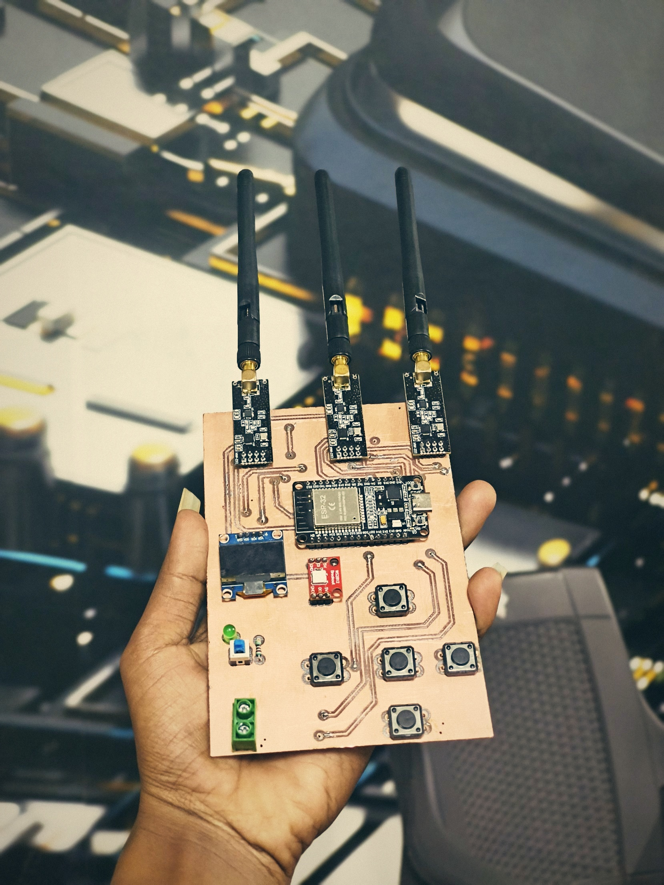

PROJECT 05
ESP32-Based Bluetooth/Wi-Fi Jammer
An ESP32-based embedded hardware prototype developed to explore wireless communication concepts, RF hardware integration, and microcontroller-based system design.

Overview
This project is an ESP32-based hardware prototype designed as part of an exploration of embedded systems and wireless communication technologies. It brings together a microcontroller board and supporting hardware components in a compact prototype.
The project provided practical exposure to hardware integration, microcontroller-based development, and the relationship between embedded electronics and wireless communication systems.
Project Description
The prototype features an ESP32 development board, a display, push buttons, and external antenna modules. These components are assembled on a custom hardware setup to explore the integration of embedded electronics and wireless communication-related hardware.
The project is documented as an educational prototype. Any RF-related testing should be conducted only in a lawful, authorized environment that does not interfere with other communication systems.